2021
BRUCE & WENDY
A Geometric Essay on Architectural Assemblies
Could the idea of the thneed—a textile that can morph and reshape itself—be applied within an architectural context?
CONTEXT
4.105: Geometric Disciplines and Architectural Skills, MIT
SOFTWARE + TOOLS
Grasshopper, Rhinoceros 3D, Illustrator, laser cutting
SUPERVISOR
J. Jih
This project examines aggregating limp sheet materials into structural assemblies through zipping and weaving techniques. In place of fasteners, the forms are self-supporting and can be disassembled and reassembled at will.
The process resembles textile Lego: reconfigurable assemblies that could support architectural and fashion applications while reducing material use.
Bruce — a leather assembly
Bruce’s leather assembly creates a three-dimensional landscape of tabs and connections, pairing a rugged exterior with a softer interior.


Wendy — an acetate assembly
Wendy uses transparent acetate to flatten the visual weight of the assembly and reveal how every connection works.



Alternate configurations